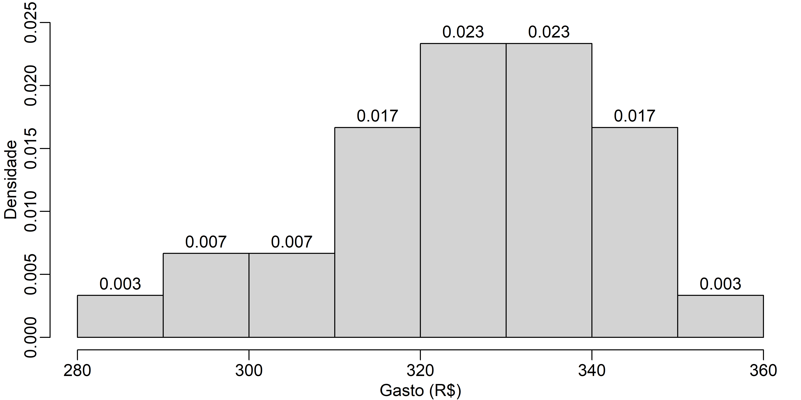

Lista
Introdução1
Quando se propõe analisar um fato ou uma situação real cientificamente, isto é, com o propósito de sustituir a visão ingênua desta realidade por uma atitude crítica e mais abrangente, deve-se procurar uma linguagem adequada que facilite e racionalize o pensamento - essa linguagem é a matemática. (Prof. Rodney Bassanezi, Malthus e a Evolução do Mundo, 2014).
O livro da natureza está escrito em caracteres matemáticos. Sem um conhecimento dos mesmos os homens não poderão compreendê-lo (Galileu Galilei).
Este artigo é uma lista de exercícios sobre estatística básica. Provavelmente, esta lista ganhará novos exercícios ao longo do tempo. Os conjuntos de dados apresentados são meramente didáticos e não condizem com a realidade, em outras palavras, são fictícios. Se o conjunto de dados apresentado for real, isto será dito e a sua fonte também será mostrada.
Estatística descritiva
Alguns funcionários de uma empresa decidiram participar de uma pesquisa para avaliar o tempo gasto para irem de casa ao trabalho usando o transporte coletivo e o automóvel próprio. Se você fosse o responsável por essa pesquisa, como a realizaria? De forma concisa descreva detalhes da coleta de dados e possíveis problemas que poderiam ocorrer.
Considere o problema anterior. Suponha que você tenha coletado uma amostra do tempo (minutos) de translado de casa ao trabalho de 10 funcionários, ora indo de transporte coletivo, ora de carro próprio (Table 1). Esse tipo de dados tem estrutura pareada (em breve estudaremos isto com detalhes).
| Funcionario | 1 | 2 | 3 | 4 | 5 | 6 | 7 | 8 | 9 | 10 |
| TC | 41 | 24 | 27 | 28 | 25 | 25 | 34 | 29 | 31 | 41 |
| AP | 22 | 34 | 31 | 22 | 29 | 22 | 16 | 18 | 20 | 25 |
TC <- c(41,24,27,28,25,25,34,29,31,41)
AP <- c(22,34,31,22,29,22,16,18,20,25)
dados <- data.frame(Funcionario=1:10,TC,AP)
dados Funcionario TC AP
1 1 41 22
2 2 24 34
3 3 27 31
4 4 28 22
5 5 25 29
6 6 25 22
7 7 34 16
8 8 29 18
9 9 31 20
10 10 41 25- Calcule o tempo médio e o desvio padrão de cada tipo de locomoção.
# Média e desvio padrão de TC
mean(dados[,2])[1] 30.5sd(dados[,2])[1] 6.293736# Média e desvio padrão de AP
mean(dados[,3])[1] 23.9sd(dados[,3])[1] 5.801341- Em função dos resultados acima, qual meio de transporte deve ser preferido? Discuta.
- Compare a dispersão dos dois meios de transporte. Qual tem maior dispersão?
#Coeficiente de Variação (%):
#TC
round((sd(dados[,2])/mean(dados[,2]))*100,2)[1] 20.64#AP
round((sd(dados[,3])/mean(dados[,3]))*100,2)[1] 24.27- Suponha que, num dado mês, uma usina de energia solar tenha produzido os seguintes valores diários (kWh):
set.seed(123)
energia <- round(c(rnorm(30,380,60)),2)
energia [1] 346.37 366.19 473.52 384.23 387.76 482.90 407.65 304.10 338.79 353.26
[11] 453.44 401.59 404.05 386.64 346.65 487.21 409.87 262.00 422.08 351.63
[21] 315.93 366.92 318.44 336.27 342.50 278.80 430.27 389.20 311.71 455.23Vamos fazer um gráfico de barras para representar estes dados. A linha horizontal representa o valor médio, ou seja, 377.17kwh.
# carregando a biblioteca
library(ggplot2)
# criando os dados
set.seed(123)
data <- data.frame(
dia=1:30,
valor=round(c(rnorm(30,380,60)),2)
)
# Gráfico de barras
ggplot(data, aes(x=dia, y=valor)) +
geom_bar(stat = "identity") +
geom_abline(slope=0,
intercept=mean(data$valor),
col = "blue",lty=2)+
labs(x="Dias do mês",
y="Energia Produzida (kWh)")Calcule:
Caso os últimos quatro dias não fossem computados, qual seria o novo valor médio?
Usando o resultado anterior, ou seja, a média dos 26 primeiros dias do mês, qual dereria ser o valor médio dos últimos quatro dias para que a média do mês seja igual a 400kWh?
Separe os valores diários de produção de energia em dois grupos, um com os valores iguais ou menores que a média e outro com os valores maiores que a média. Quais as médias desses grupos? Qual a média destes dois valores médios?
- Seja uma população constituída pelos valores 7, 9 e 15 (N=3). Suponha que todas as possíveis amostras de tamanho dois (\(n=2\)), com reposição, foram selecionadas dessa população.
Encontre a variância \(\sigma^2\) da população.
Liste as diferentes possíveis amostras de tamanho dois com reposição e encontre a variância amostral \(s^2\) para cada uma delas. Encontre a média das variâncias amostrais.
Trate cada possível amostra de tamanho dois como se fosse uma população e calcule \(\sigma^2\). Calcule a média dessas variâncias.
Em que item, b. ou c., resultou em uma melhor estimativa de \(\sigma^2\)?
library(gtools)
dd <- c(7,9,15)
vv <- var(dd)*2/3;vv[1] 11.55556y = as.data.frame(permutations(n=3, r=2,
v=dd,
repeats.allowed=T))
colnames(c('r1','r2'))y$s <- apply(y[,1:2],1, var)
y$v <- apply(y[,1:2],1, var)/2
y V1 V2 s v
1 7 7 0 0
2 7 9 2 1
3 7 15 32 16
4 9 7 2 1
5 9 9 0 0
6 9 15 18 9
7 15 7 32 16
8 15 9 18 9
9 15 15 0 0ms <- mean(y$s);ms[1] 11.55556mv <- mean(y$v);mv[1] 5.777778- Uma pesquisa mostrou que o brasileiro gasta em média R$234,19 por mês se alimentando fora de casa (dados fictícios). Os gastos mensais para se alimentar fora de casa referentes a uma amostra de 30 adolescentes estão apresentados na Tabela Table 2.
| 309 | 324 | 305 | 312 | 281 | 341 | 355 | 296 | 342 | 337 |
| 334 | 321 | 322 | 299 | 335 | 320 | 338 | 330 | 323 | 330 |
| 332 | 342 | 346 | 317 | 326 | 319 | 333 | 339 | 311 | 344 |
# Dados
dados <- c(309,324,305,312,281,341,355,296,
342,337,334,321,322,299,335,320,
338,330,323,330,332,342,346,317,
326,319,333,339,311,344)
dados [1] 309 324 305 312 281 341 355 296 342 337 334 321 322 299 335 320 338 330 323
[20] 330 332 342 346 317 326 319 333 339 311 344- Faça uma tabela de distribuição de frequências (use o bom senso).
- Esboce um histograma.
par(bg="white")
par(mar=c(2.5,2.5,0.5,0.5), mgp=c(1.5,0.5,0))
hist(dados, labels = T, main = "",
xlab = 'Gasto (R$)', ylab = 'Frequência',
ylim =c(0,8))par(bg="white")
par(mar=c(2.5,2.5,0.5,0.5), mgp=c(1.5,0.5,0))
hist(dados, labels = T, main = "",
xlab = 'Gasto (R$)', ylab = 'Densidade',
probability = T, ylim = c(0,0.025))
- Qual a proporção de elementos entre os valores 315 e 345?
- Calcule a média e a mediana.
summary(dados) Min. 1st Qu. Median Mean 3rd Qu. Max.
281.0 317.5 328.0 325.4 337.8 355.0 - Se considerarmos os dados do item anterior, esses adolescentes gastam o mesmo que a média dos brasileiros que se alimentam fora?
- Calcule o primeiro e o terceiro quartis.
- Calcule a amplitude e a amplitude interquartil.
- Construa um boxplot.
par(bg="white")
par(mar=c(2.5,2.5,0.5,0.5), mgp=c(1.5,0.5,0))
boxplot(dados, ylab = "Gastos (R$)") - Calcule a variância, o desvio-padrão e o coeficiente de variação.
var(dados)[1] 276.323sd(dados)[1] 16.62297(sd(dados)/mean(dados))*100[1] 5.107948- As receitas de duas concessionárias estão apresentadas na Table 3. Qual delas apresenta maior dispersão? Discuta os resultados.
| Concessionária | Média (R$) | Desvio (R$) |
|---|---|---|
| A | 3280000 | 1500000 |
| B | 630000 | 500000 |
# Coeficiente de variação
# A:
(1500000/3280000)*100[1] 45.73171#B
(500000/630000)*100[1] 79.36508Análise bivariada
- Na Table 4 é apresentado seis observações das variáveis \(X\) e \(Y\).
| X | 7 | 11 | 7 | 16 | 11 | 7 |
| Y | 7 | 12 | 8 | 16 | 13 | 7 |
x <- c(7,11,7,16,11,7)
y <- c(7,12,8,16,13,7)
dados3 <- data.frame(X=x, Y=y)
dados3 X Y
1 7 7
2 11 12
3 7 8
4 16 16
5 11 13
6 7 7- Faça um diagrama de dispersão (\(X\) no eixo horizontal).
par(bg="white")
par(mar=c(2.5,2.5,0.5,0.5), mgp=c(1.5,0.5,0))
plot(Y~X, dados3) - Calcule a covariância da amostra.
cov(x,y)[1] 13.1- Calcule e interprete a correlação da amostra.
cor(x,y)[1] 0.9757751# ou
cov(x,y)/(sd(x)*sd(y))[1] 0.9757751- O diretor de uma escola quer saber se há associação entre a média escolar (\(ME\)) e o desempenho em um simulado (\(SIM\)). Na Table 5 é apresentado uma amostra de seis alunos.
| Aluno | 1.0 | 2.0 | 3.0 | 4.0 | 5.0 | 6.0 |
| ME | 5.3 | 6.2 | 5.1 | 7.8 | 6.4 | 5.1 |
| SIM | 5.5 | 6.6 | 5.4 | 7.6 | 7.2 | 5.3 |
ME <- c(5.3,6.2,5.1,7.8,6.4,5.1)
SIM <- c(5.5,6.6,5.4,7.6,7.2,5.3)
dados4 <- data.frame(Aluno=1:6,ME, SIM)
dados4 Aluno ME SIM
1 1 5.3 5.5
2 2 6.2 6.6
3 3 5.1 5.4
4 4 7.8 7.6
5 5 6.4 7.2
6 6 5.1 5.3- Faça um diagrama de dispersão (\(ME\) no eixo horizontal).
par(bg="white")
par(mar=c(2.5,2.5,0.5,0.5), mgp=c(1.5,0.5,0))
plot(SIM~ME,data = dados4) - Calcule a covariância da amostra.
cov(dados4$ME,dados4$SIM)[1] 1.005333- Calcule e interprete a correlação da amostra.
cor(dados4$ME,dados4$SIM)[1] 0.9511981# ou
cov(dados4$ME,dados4$SIM)/(sd(dados4$ME)*sd(dados4$SIM))[1] 0.9511981- Tempo de caminhada \(\times\) Gordura corporal. Dados de tempo semanal de caminhada (horas) e a gordura corporal (%) de oito indivíduos do sexo masculino com idade acima de 60 anos são apresentados na Table 6.
| Indivíduo | 1 | 2 | 3 | 4 | 5 | 6 | 7 | 8 |
| Tempo | 6 | 12 | 4 | 2 | 5 | 7 | 14 | 10 |
| Gordura | 22 | 11 | 23 | 25 | 21 | 19 | 9 | 12 |
Tempo <- c(6,12,4,2,5,7,14,10)
Gordura <- c(22,11,23,25,21,19,9,12)
dados5 <- data.frame(Ind=1:8,Tempo, Gordura)
dados5 Ind Tempo Gordura
1 1 6 22
2 2 12 11
3 3 4 23
4 4 2 25
5 5 5 21
6 6 7 19
7 7 14 9
8 8 10 12- Faça um diagrama de dispersão (coloque o tempo no eixo horizontal).
par(bg="white")
par(mar=c(2.5,2.5,0.5,0.5), mgp=c(1.5,0.5,0))
plot(Gordura~Tempo,data = dados5) 
- Calcule a covariância da amostra.
cov(dados5$Tempo,dados5$Gordura)[1] -25- Calcule e interprete a correlação da amostra.
cor(dados5$Tempo,dados5$Gordura)[1] -0.9804268Noções de Probabilidades
Determine a probabilidade de aparecer um quatro pelo menos uma vez em dois lançamentos de um dado honesto.
Suponha duas extrações em uma urna onde há 3 bolas verdes e 4 bolas amarelas. Construa um diagrama em árvore e escreva as probabilidades para os casos:
Sem reposição
Com reposição
- Os fornecedores \(A_1\), \(A_2\) e \(A_3\) são responsáveis 40%, 35% e 25% dos componentes eletrônicos vendidos por uma loja. Sabe-se que os componentes fabricados por esses fornecedores tem uma taxa de defeitos de 2%, 3% e 4%.
Qual a probabilidade da loja vender um componente eletrônico com defeito?
Qual a probabilidade de um componente eletrônico defeituoso que foi vendido pela loja ser do fornecedor \(A_1\)?
- Os centros cirúrgicos \(A_1\), \(A_2\) e \(A_3\) são responsáveis por 38%, 34% e 28% das cirurgias em um Hospital. Esses centros cirúrgicos apresentam 0.5%, 0.7% e 1.2% de infecção hospitalar.
Qual a probabilidade de um paciente internado nesse Hospital ter infecção hospitalar?
Qual a probabilidade de um paciente com infecção hospitalar ter realizado cirurgia no centro \(A_1\)?
- Suponha que você está criando um teste diagnóstico para uma dada doença. Então, seleciona 500 indivíduos, 250 doentes e 250 não doentes pelo padrão-ouro e aplica o teste. Os resultados podem ser vistos na Table 7.
| Teste | Doentes | Não doentes |
|---|---|---|
| Positivo | 241 | 25 |
| Negativo | 9 | 225 |
| Total | 250 | 250 |
- Qual a sensibilidade do teste?
- Qual a especificidade do teste?
- Supondo que essa doença atinge 0.5% da população, qual o Valor Preditivo Positivo (VPP) e o Valor Preditivo Negativo (VPN)?
- Agora suponha que 15% da população tem essa doença, qual o Valor Preditivo Positivo (VPP) e o Valor Preditivo Negativo (VPN)?
- Suponha que você irá fazer um teste com quatro questões. Em cada questão há cinco alternativas, das quais apenas uma está correta. Qual a probabilidade de:
- acertar as quatro questões no “chute”?
- acertar três questões “Chutando”?
- A probabilidade de um atirador acertar um alvo é de 40%. Suponha que o atirador disparou quinze vezes. Qual a probabilidade de:
- Acertar exatamente cinco vezes o alvo?
- Acertar o alvo pelo menos três vezes (pelo menos três vezes quer dizer três, quatro, cinco, \(\cdots\) ou 15 vezes). Sugestão: \(P(X \geq 3)\) = \(1 - P(X<3)\) = \(1 - \{P(X=0)\) + \(P(X=1)\) + \(P(X=2) \}\)
Distribuição Normal
- Suponha que, numa dada população, o QI (Quociente de Inteligência) siga uma distribuição Normal com média 105 e variância 49. Calcule:
a probabilidade de encontrarmos nessa população indivíduos com QI acima de 115.
a quantidade de indivíduos que tem QI entre 90 e 100, dado que esta população é composta por 10000 sujeitos.
o valor mínimo de QI para que um indivíduo seja considerado super inteligente (considere que apenas 1% da população seja super inteligente).
- As notas finais da disciplina de Estatística se distribuiem normalmente com méia 6.75 e variância 9. Se o valor para a aprovação é 6.00, responda:
qual a probabilidade de um aluno ser aprovado na disciplina?
se a sala tem 40 alunos, quantos estarão aprovados?
qual a probabilidade de um aluno ser aprovado com média final maior que 8.00?
- Se uma dada espécie de peixe vive em média 550 dias (desvio padrão de 80 dias) em um aquário, responda:
qual a probabilidade de um peixe viver mais que 700 dias?
sabendo que 25% dos peixes dessa população morrem antes de atingirem a fase reprodutiva, qual o tempo de vida de um peixe para atingir essa fase?
- Numa certa região há 6 mil empresas ligadas ao varejo. Suponha que o faturamento anual deste setor siga uma distribuição normal com média igual a 1.8 milhão de reais e desvio padrão de 0.7 milhão.
qual a quantidade de empresas, nesta região, que faturam mais de 0.5 milhão de reais ao ano?
sabe-se que 3% das empresas da região são consideradas grandes. Qual o valor mínimo faturado para que uma empresa seja considerada de grande porte?
Distribuição amostral da média
- Seja X uma variável aleatória que segue um distribuição normal com média 110 e variância 100:
qual \(P(100<X<120)\)?
se \(\overline{X}\) for a média amostral de tamanho 9 dessa população, calcule \(P(100<\overline{X}<120)\).
faça um gráfico com as distribuições de \(X\) e \(\overline{X}\).
x <- seq(70,150,0.01)
y1 <- dnorm(x,110,10)
y2 <- dnorm(x,110,2.5)
par(mar=c(2.5,2.5,0.5,0.5), mgp=c(1.5,0.5,0))
plot(y1~x, type="l",col="blue",ylim=c(0,0.18),
ylab = "Densidade")
points(y2~x,type="l",col="black")
legend("topright", legend=c("y1", "y2"), col=c("blue", "black"), lty=1)- qual o tamanho da amostra para que \(P(100<\overline{X}<120)=0.95\)?
- Para empacotar camaroes congelados você usa uma máquina em que a massa dos pacotes tem distribuição normal com média \(\mu\) e desvio padrão 25g.
qual o valor da média (\(\mu\)) que você deve regular a máquina para que somente 5% dos pacotes tenham massa menor que 1000g?
depois de regulada, você retira uma amostra de 5 pacotes. Qual a probabilidade da médias da amostra ser menor que 1000g?
- Como vendedor, interessa colocar valores mínimo e máximo para a massa dos pacotes oriundos da sua máquina, vista no exercício anterior. Você propõe que amostras de tamanho 5 não possam ter média menor que 990g, pois fere o código do consumidor, e nem maior que 1040g pois o seu negócio teria prejuizo. Caso o proposto não ocorra, você para a produção para regular novamente a máquina.
qual a probabilidade da produção ser parada?
se a máquina desregulou e a massa média dos pacotes agora é 1000g, qual a probabilidade da produção não ser interrompida?
- A massa dos usuários de um elevador com capacidade máxima de 600kg, segue uma distribuição normal com média de 72kg e variância 100. Qual a probabilidade desse elevador ter 8 pessoas e ultrapassar o seu limite?
Intervalo de confiança
Para estimar a média da massa dos universitários do sexo masculino da universidade em que estuda, você coletou uma amostra de 200 indivíduos e obteve \(\bar{x}=78.9kg\). A população tem distribuição normal com \(\sigma = 15kg\). Construa um intervalo de confiança para a média populacional com nível de confiança igual a 95%.
A concentração de oxigênio dissolvido na água (\(COD\)) é um importante parâmetro para caracterizar a qualidade das águas de córregos e rios. Querendo conhecer a COD num dado córrego, você coletou uma amostra com os seguintes valores em \(mg \cdot L^{-1}\): { 5.64, 4.87, 5.99, 4.66, 6.02, 4.49, 5.55 }. Supondo que a \(COD\) na água tenha distribuição normal, construa um intervalo de confiança para a média com 95% de confiança.
Você deseja estimar a prevalência de uma dada doença na cidade onde mora. Para isso, coletou uma amostra de 484 indivíduos dessa população, dos quais 195 tinham a doença. Construa um intervalo com 95% de confiança para a prevalência da população.
Sua equipe é contratada para fazer uma pesquisa de intensão de votos para o candidato \(A\). Qual o tamanho da amostra para que a margem de erro seja de no máximo 2% na construção de um intervalo de confiança com \(\alpha = 0.05\)? Suponha uma amostragem aleatória simples e adote o método conservador.
Você está fazendo uma pesquisa com clientes de uma rede de supermercados que compram sabão em pó. Seu objetivo é estimar a preferência dessa população pela marca A. Desejando uma margem de erro de no máximo 5%, qual o tamanho da amostra necessária para construir um intervalo de confiança para a preferência da população com 95% de confiança (IC conservador)?
O perímetro do tronco a \(1m\) de altura pode ser usado para identificar o desenvolvimento de algumas espécies de árvores. Você deseja estimar a proporção de árvores adultas de uma dada espécie numa reserva. Dessa espécie, árvores com perímetro acima de \(80cm\) são consideradas adultas. Coletou-se uma amostra de 200 plantas, das quais 85 foram consideradas adultas. Construa um IC para a proporção com \(\alpha = 0.05\).
Seja \(X\) uma variável aleatória com distribuição normal e parâmetros desconhecidos. Retirá-se uma amostra dessa população: { 20, 24, 25, 29, 20, 27, 35, 28, 23, 29 }. Construa um IC para \(\mu\) com \(\alpha = 0.05\).
Numa lagoa de criação, suspeita-se que alguns peixes estão apresentando massa abaixo do esperado para a idade. Coleta-se uma amostra de 400 peixes, dos quais 182 estão com baixa massa. Construa um IC para a proporção com \(\alpha=0.05\).
Dez ratos de laboratório foram alimentados com uma ração especial ao longo de um mês. As massas finais foram {46, 54, 43, 51, 58, 60, 75, 30, 55, 51 }. Construa um IC para a media das massas com \(\alpha = 0.05\).
Para estimar a altura das crianças da \(4^a\) série, uma escola coletou uma amostra com 25 crianças observando uma média de \(140cm\) e desvio padrão de \(5cm\). Supondo que a distribuição da altura das crianças seja normal, construa um intervalo de confiança para a média da população com \(\alpha=0.05\).
Uma amostra aleatória de 625 clientes de uma loja de material de limpeza revela que 70% deles preferem a marca \(A\) de detergente. Construir um intervalo de confiança para a proporção de clientes que preferem \(A\) com \(\alpha=0.05\).
Com a intensão de estimar a proporção de eleitores favoráveis ao seu candidato, um certo partido político coletou uma amostra com 300 eleitores. Desses, 100 disseram que votam no candidato do partido. Determine o intervalo de confiança para a proporção de eleitores do candidato em questão com \(\alpha = 0.05\).
Teste de hipóteses
Para uma amostra
Uma plantação de uma dada espécie de árvore é destinada a fabricação de móveis. O seu ponto de corte ocorre quando o perímetro à \(1m\) de altura atinge \(120cm\). Para saber se uma certa área, onde as plantas tem a mesma idade, pode ser destinada ao corte, você coleta uma amostra do perímetro de 20 árvores e obtém uma média igual a \(117cm\). Sabendo-se que o perímetro se distribui normalmente e que \(\sigma = 20cm\), qual decisão você tomaria (\(\alpha=0.05\))?
Um produtor de camarão comercializa seu produto em pacotes de 500g. Um orgão fiscalizador coleta uma amostra com seis pacotes e pesagem revela que suas massas são 498, 487, 495, 491, 493 e 488 g. Ao nível de 5%, verificar se o consumidor pode estar sendo lesado pelo produtor.
Um programa de prevenção é realizado em várias indústrias com a intensão de reduzir a quantidade de tempo perdido devido aos acidentes de trabalho que, nos últimos anos, foi de 70 horas/funcionário. Após um ano de programa, uma amostra com 8 indústrias apresentou os seguintes valores: 65, 67, 56, 59, 44, 55, 51 e 69 horas/funcionário. Ao nível de 5%, houve evidência de que o programa de prevenção trouxe melhoria para funcionários e patrões?
O consumo per capita de açucar numa certa cidade é de 15.5 kg ao ano. Um programa feito pela prefeitura, visando diminuir esse valor, foi realizado. Após o programa, uma amostra com 30 pessoas foi selecionada e verificou-se que o consumo médio foi de 14.1 kg/ano e desvio padrão de 0.6 kg/ano. Ao nível de 5%, testar se houve diminuição no consumo per capita de açúcar pela população da cidade.
Uma empresa garante que 90% dos equipamentos fornecidos por ela atendem as especificações exigidas. Coletou-se uma amostra de 300 peças, das quais constatou-se que 36 eram defeituosas. Ao nível de 5%, teste se a informação do fabricante está correta.
Um candidato a prefeito de certa cidade acredita que 40% da população irá votar nele. Caso esse percentual seja menor, ele irá mudar sua estrategia de campanha. Ele encomenda uma pesquisa a um instituto que, a partir de uma amostra de 2000 pessoas, constatou que 760 votam no candidato. Ao nível de 5%, qual deve ser a decisão do candidato?
Suponha que a concentração de oxigênio dissolvido na água (\(COD\)) de córregos e rios deva ser maior que 5.00 \(mg \cdot L^{-1}\). Querendo conhecer a COD num dado córrego, você coletou uma amostra com os seguintes valores em \(mg \cdot L^{-1}\): { 5.64, 4.87, 5.99, 4.66, 6.02, 4.49, 5.55 }. Ao nível de 5%, teste a hipótese de que esse córrego apresenta as condições mínimas para a vida.
A altura dos universitários do sexo masculino de uma certa universidade é dada como 169cm. Você, como aluno dessa universidade, percebe que nos últimos anos muitos alunos de outros países vieram estudar nela. Isso o faz supor que o valor de referência para a altura tenha mudado. Para testar sua hipótese, você coletou uma amostra com 25 indivíduos e obteve o valor médio de \(172cm\) com desvio padrão de 6cm. Ao nível de 5%, testar a sua hipótese.
Em uma suinocultura, os animais foram alimentados com uma nova ração, rica em proteína, ao longo de dois meses. Espera-se que, ao final desse período, tenham, em média, massa igual a \(50kg\). Para testar se eles atingiram esse valor, você coleta uma amostra: {47, 51, 46, 52, 45, 45, 50, 53, 49, 52 } \(kg\). Ao nível de 5%, você considera que os animais, alimentados com a nova ração, apresentam crescimento adequado para a idade?
As indústrias moveleiras de um certo país pagam em média 2.6 salários mínimos aos seus funcionários. Uma amostra com 30 funcionários de uma indústria desse país, escolhida ao acaso, aponta um salário médio de 2.4 salários mínimos e desvio padrão de 0.5 salários mínimos. Admitindo que a distribuição dos salários das indústrias moveleiras seja normal, teste se essa indústria paga salários inferiores à media nacional (\(\alpha=0.05\)).
Um programa de televisão pode ser modificado por seus produtores se menos de um terço das pessoas que assistem televisão, no mesmo horário desse programa, não o assistem regularmente. Para decidir sobre isso, uma pesquisa com 450 famílias foi realizada. Observou-se que 80 delas assistem regularmente ao programa. Qual decisão os produtores devem tomar (\(\alpha=0.05\))?
Para a realização de uma certa tarefa, um funcionário gasta em média 80 minutos. Na tentativa de diminuir esse tempo, um novo procedimento foi introduzido na empresa. Em seguida, mediu-se o tempo gasto para a realização dessa tarefa de 25 funcionários. O tempo médio da amostra foi de 72 minutos com desvio padrão de 10 minutos. Estes resultados apontam para uma diminuição no tempo de execução da tarefa (\(\alpha=0.05\))?
Um agricultor produz soja em seis lotes. Neste ano produziu 1110, 812, 482, 2191, 2005 e 2338 sacas respectivamente em áreas de 30, 22, 12, 55, 50 e 62 ha. Considerando que a produtividade de soja segue uma distribuição normal, veja se a produtividade deste ano, para este agricultor, foi maior ou não que a média da região, ou seja, 36.8 sacas/ha (\(\alpha=0.05\)).
Você trabalha numa empresa que produz tinta para calçadas, entre outras coisas. Como engenheiro, você está desenvolvendo uma nova formulação com o objetivo de reduzir o tempo de secagem que hoje é de 20 minutos. Essa nova formulação foi aplicada em 40 áreas e observou-se que o tempo médio para secagem foi de 17 minutos com desvio padrão igual a 3 minutos. Neste caso, você diria que a nova formulação foi mais eficaz ou não para o processo de secagem (\(\alpha=0.05\))?
Para duas amostras
Pareado
- Como nutricionista, você submete uma dieta ao longo de 15 dias para um grupo de 12 pessoas. Os dados amostrais antes e depois da dieta estão apresentados na Table 8. Supondo normalidade (distribuição amostral da diferença entre médias), ao nivel de 5%, podemos dizer que essa dieta diminuiu a massa média da população?
| Paciente | 1 | 2 | 3 | 4 | 5 | 6 | 7 | 8 | 9 | 10 | 11 | 12 |
| Antes | 106 | 89 | 92 | 93 | 90 | 90 | 99 | 94 | 96 | 106 | 97 | 109 |
| Depois | 101 | 92 | 99 | 92 | 86 | 88 | 90 | 95 | 94 | 94 | 97 | 83 |
set.seed(7)
# Amostra da população Antes
xa <- round(rnorm(12,mean=95,sd=5),0)
# Amostra da população Depois
xb <- round(rnorm(12,mean=90,sd=5),0)
# Diferença
d <-xa - xb
# Média da diferença
mean(d)[1] 4.166667# Desvio padrão da diferença
sd(d)[1] 8.536907# Teste t pareado unilateral a direita
t.test(xa,xb,paired = T, alternative = "greater")
Paired t-test
data: xa and xb
t = 1.6907, df = 11, p-value = 0.05949
alternative hypothesis: true mean difference is greater than 0
95 percent confidence interval:
-0.2590991 Inf
sample estimates:
mean difference
4.166667 # t calculado
t.test(xa,xb,paired = T, alternative = "greater")$statistic t
1.690748 # Quantil
qt(0.95,11)[1] 1.795885- Você, como engenheiro, quer verificar se um programa de segurança no trabalho será responsável pela diminuição das perdas semanais (horas/funcionário) devido à acidentes de trabalho em dez indústrias da sua região. Os dados das perda semanais (horas/funcionário), antes e depois do programa de segurança para as dez industrias estão apresentados na Table 9. Supondo normalidade, teste se o programa de segurança foi eficaz ou não (\(\alpha=0.05\)).
| Indústria | 1 | 2 | 3 | 4 | 5 | 6 | 7 | 8 | 9 | 10 |
| Antes | 65 | 66 | 66 | 67 | 68 | 70 | 71 | 73 | 79 | 79 |
| Depois | 61 | 64 | 65 | 66 | 66 | 67 | 69 | 73 | 74 | 76 |
set.seed(7)
# Amostra da população Antes
xa <- sort(round(rnorm(10,mean=70,sd=4),0))
# Amostra da população Depois
xb <- sort(round(rnorm(10,mean=65,sd=4),0))
# Diferença
d <-xa - xb
# Média da diferença
mean(d)[1] 2.3# Desvio padrão da diferença
sd(d)[1] 1.494434# Teste t pareado unilateral a direita
t.test(xa,xb,paired = T, alternative = "greater")
Paired t-test
data: xa and xb
t = 4.8669, df = 9, p-value = 0.0004437
alternative hypothesis: true mean difference is greater than 0
95 percent confidence interval:
1.433705 Inf
sample estimates:
mean difference
2.3 # t calculado
t.test(xa,xb,paired = T, alternative = "greater")$statistic t
4.866885 # Quantil
qt(0.95,9)[1] 1.833113- Duas marcas A e B de máquinas industriais são testadas por seis funcionários. O tempo para realizar a mesma operação estão apresentados na Table 10. Ao nível de significância de 5%, podemos dizer que a máquina B é mais rápida ou não?
| Funcionário | 1 | 2 | 3 | 4 | 5 | 6 |
| A | 76 | 77 | 77 | 78 | 79 | 87 |
| B | 75 | 75 | 76 | 77 | 82 | 83 |
set.seed(7)
# Amostra da população A
xa <- sort(round(rnorm(6,mean=80,sd=3),0))
# Amostra da população B
xb <- sort(round(rnorm(6,mean=75,sd=3),0))
# Diferença
d <-xa - xb
# Média da diferença
mean(d)[1] 1# Desvio padrão da diferença
sd(d)[1] 2.280351# Teste t pareado unilateral a direita
t.test(xa,xb,paired = T, alternative = "greater")
Paired t-test
data: xa and xb
t = 1.0742, df = 5, p-value = 0.1659
alternative hypothesis: true mean difference is greater than 0
95 percent confidence interval:
-0.8759079 Inf
sample estimates:
mean difference
1 # t calculado
t.test(xa,xb,paired = T, alternative = "greater")$statistic t
1.074172 # Quantil
qt(0.95,5)[1] 2.015048Não pareado
- Duas minas de carvão, A e B, são amostradas para se conhecer a capacidade de gerar calor do material proveniente delas. Essa capacidade em milhões de calorias por tonelada estão apresentadas na Table 11. Ao nível de significância de 5% e supondo que os dados amostrais foram extraídos de populações normais, teste se há diferença entre as minas?
| Funcionário | 1 | 2 | 3 | 4 | 5 | 6 |
| A | 7857 | 7918 | 7924 | 7993 | 8069 | 8798 |
| B | 7779 | 7839 | 7885 | 7973 | 8298 | 8416 |
set.seed(5)
# Amostra da população Antes
xa <- sort(round(rnorm(6,mean=8180,sd=270),0))
# Amostra da população Depois
xb <- sort(round(rnorm(6,mean=7705,sd=255),0))
# Teste t bilateral
t.test(xa,xb,paired = F, alternative = "two.side")
Welch Two Sample t-test
data: xa and xb
t = 3.4206, df = 7.9736, p-value = 0.009126
alternative hypothesis: true difference in means is not equal to 0
95 percent confidence interval:
172.8688 889.4645
sample estimates:
mean of x mean of y
8201.000 7669.833 # t calculado
t.test(xa,xb,paired = F, alternative = "two.side")$statistic t
3.420559 # Quantil
qt(0.975,5)[1] 2.570582Regressão linear simples
- Tempo de caminhada \(\times\) Gordura corporal. Dados de tempo semanal de caminhada (horas) e a gordura corporal (%) de oito indivíduos do sexo masculino com idade acima de 60 anos são apresentados na Table 6.
| Indivíduo | 1 | 2 | 3 | 4 | 5 | 6 | 7 | 8 |
| Tempo | 6 | 12 | 4 | 2 | 5 | 7 | 14 | 10 |
| Gordura | 22 | 11 | 23 | 25 | 21 | 19 | 9 | 12 |
Tempo <- c(6,12,4,2,5,7,14,10)
Gordura <- c(22,11,23,25,21,19,9,12)
dados5 <- data.frame(Ind=1:8,Tempo, Gordura)
dados5 Ind Tempo Gordura
1 1 6 22
2 2 12 11
3 3 4 23
4 4 2 25
5 5 5 21
6 6 7 19
7 7 14 9
8 8 10 12- Faça um diagrama de dispersão (coloque o tempo no eixo horizontal).
par(bg="white")
par(mar=c(2.5,2.5,0.5,0.5), mgp=c(1.5,0.5,0))
plot(Gordura~Tempo,data = dados5) - Calcule a covariância da amostra.
cov(dados5$Tempo,dados5$Gordura)[1] -25- Calcule e interprete a correlação da amostra.
cor(dados5$Tempo,dados5$Gordura)[1] -0.9804268- Estime os parâmetros da regressão. Calcule o coeficiente de determinação
summary(lm(Gordura~Tempo,dados5))
Call:
lm(formula = Gordura ~ Tempo, data = dados5)
Residuals:
Min 1Q Median 3Q Max
-2.10417 -0.48958 -0.02083 0.57292 2.06250
Coefficients:
Estimate Std. Error t value Pr(>|t|)
(Intercept) 28.6875 1.0092 28.43 1.25e-07 ***
Tempo -1.4583 0.1196 -12.20 1.85e-05 ***
---
Signif. codes: 0 '***' 0.001 '**' 0.01 '*' 0.05 '.' 0.1 ' ' 1
Residual standard error: 1.31 on 6 degrees of freedom
Multiple R-squared: 0.9612, Adjusted R-squared: 0.9548
F-statistic: 148.8 on 1 and 6 DF, p-value: 1.847e-05par(bg="white")
par(mar=c(2.5,2.5,0.5,0.5), mgp=c(1.5,0.5,0))
plot(Gordura~Tempo,data = dados5)
abline(lm(Gordura~Tempo,dados5))Footnotes
Caso encontre erros, queira fazer comentários, ou trocar uma ideia sobre o artigo, por favor, me escreva: omarcnpereiraead@gmail.com↩︎